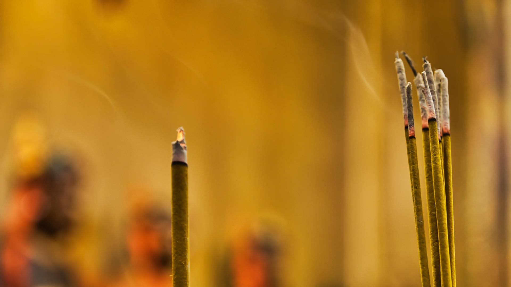

Traditional Incense
Traditional stick-based varieties, perfect for daily rituals and meditation
Explore More →Discover the ancient craft of incense production and its cultural significance
For thousands of years, the art of creating incense has been practiced across cultures, combining aromatic natural ingredients to produce fragrant smoke that enriches spiritual practices, meditation, and daily life.
Incense is a natural material that gives off a pleasant scent when burned. It’s used for
things like creating a relaxing
vibe, spiritual practices, aromatherapy, meditation, or ceremonies. Sometimes, it’s just a
way to freshen up space
or keep bugs away.
There are two main kinds of incense: one that needs an external heat source to release its
fragrance (like charcoal
or a burner) and another that you light directly with a flame. For the second type, you blow
out the flame after
lighting it, leaving a glowing tip that slowly releases scented smoke. This kind can come as
a paste wrapped
around a bamboo stick or shaped into sticks or cones.
Dating back over 6,000 years, incense has been an integral part of human civilization, from ancient Egypt to the Silk Road trade routes.
Throughout history, incense has played a central role in religious ceremonies, meditation practices, and spiritual rituals across cultures.
Many cultures have used incense for its therapeutic properties, incorporating it into traditional healing practices and aromatherapy.
The word "incense" comes from the Latin word incendere, meaning "to burn."
Used beautifully arranged flowers and incense in practical and spiritual ways - to mask smells, ward off evil spirits, and please gods. Archaeologists found resin balls in tombs at El Mahasna, and the Temple of Deir-el-Bahari has carvings showing incense gathering journeys.
Used incense for worship, made from herbs and plants like cassia, cinnamon, styrax and sandalwood. Use peaked during Song dynasty with special buildings for incense ceremonies.
Oldest written records appear in the Vedas (Atharvaveda and Rigveda). Used for fragrance, healing (early Ayurveda), and became central to Hindu and Buddhist rituals.
Buddhist monks brought incense stick making to China from India. Some types doubled as natural bug repellent.
Korean Buddhist monks introduced incense to Japan for purification rituals. By Heian period (~200 years later), nobles enjoyed high-quality Koh incense as entertainment.
Samurai scented helmets and armor with incense, believing it gave an air of strength and left noble impression if they fell in battle.
During Muromachi period, the art of appreciating incense (kōdō) became popular among Japan's upper and middle classes.
Rich tradition of oud and bakhoor burning. Development of unique incense traditions along the historic Silk Road trade routes.
Contemporary use in meditation, aromatherapy, and mindfulness practices. Fusion of traditional methods with modern wellness approaches.

Traditional stick-based varieties, perfect for daily rituals and meditation
Explore More →
Incense cones are a type of incense that have a distinctive cone shape...
Explore More →
Incense is a sacred offering in Buddhism. It is used to honor the Triple Gem of the Buddha...
Explore More →Create a calming atmosphere that enhances focus and promotes deeper meditation practices.
Traditional uses include natural air cleansing and creating fresh, aromatic environments.
Certain incense fragrances are known to help reduce stress and promote relaxation.
Premium natural ingredients sourced globally, carefully selected for authenticity and quality in traditional incense making.
Time-honored techniques combined with modern precision to create perfectly balanced incense products.
Rigorous testing and refinement ensure each product meets our exacting standards for fragrance and burning characteristics.

Traditional Japanese sandalwood incense, perfect for meditation
Learn More →